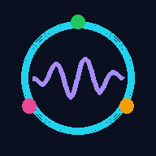

Apasă + pe orice stivă ca s-o pui aici, una peste alta (de exemplu 2–3 organe sau stive din domenii diferite). Le generezi apoi într-un singur audio. Poți scoate o stivă întreagă sau doar un element.
Fiecare aminoacid are o masă moleculară. Aplicația transformă masa într-o frecvență (prin octave, inspirat de ideea „proteodiilor” a lui J. Sternheimer) și o potrivește pe o gamă pentatonică, ca melodia să sune plăcut. O stivă leagă mai multe secvențe una după alta. Sunetul se calculează direct pe telefon ca fișier WAV (44,1 kHz, 16-bit, mono), deci merge și fără internet.
Secvențele din aplicație sunt fragmente scurte, ilustrative, asociate cu numele proteinelor. Nu sunt secvențele complete din UniProt. Alegerea zonei și a acțiunii schimbă doar ce melodie se generează.
Scrie cu cuvintele tale ce nevoie ai (ex. „nu dorm bine și am dureri de spate”). Asistentul alege țintele potrivite din bibliotecă, îți explică fiecare element și ce reprezintă împreună. Poți apoi scrie „adaugă BDNF”, „scoate OXT”, „mai calm”, „mai alert” sau „ce este NRF2?”. Funcționează direct pe telefon, fără internet.
Pentru fiecare stivă găsești ce este și ce face fiecare proteină în corp (rolul biologic cunoscut) și tema comună a stivei. Tema descrie ce reprezintă combinația, nu un efect dovedit al ascultării.